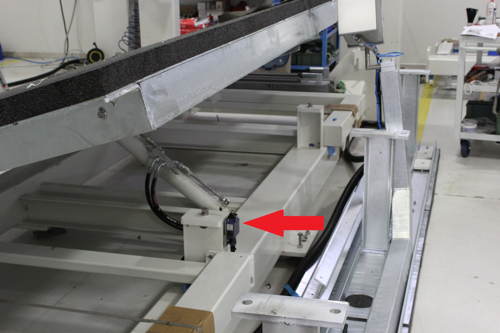

PE0021 FOLDING BENCH NOT IN POSITION
- Spiegazione dell'errore
- Possibili cause
- Possibili soluzioni
- NB: Ricordare di riabilitare il banco
- Articoli collegati
Spiegazione dell'errore
Il banco ribaltabile risulta fuori dalla posizione di parcheggio.


Possibili cause
Le possibili cause di questo allarme sono molteplici, sia di tipo meccanico sia di tipo elettrico:
Per la macchina il banco non si trova nella posizione di parcheggio le motivazioni potrebbero essere:
Il banco è inclinato e non tocca il fine corsa;
Il banco è in posizione di parcheggio ma non tocca il fine corsa;
Fine corsa del banco guasto;
Collegamento tra fine corsa banco e quadro elettrico guasto.
Il banco per qualche motivo meccanico ad esempio tubi rotti, olio mancante, pompa rotta non si riesce a riportare in parcheggio
Possibili soluzioni
!ATTENZIONE! Con l'allarme attivo la macchina non si può movimentare, quindi se la macchina non è in parcheggio saremo in una condizione di blocco, In Parametrix entrare nel primo "Lucchetto" premere il pulsante "Chiave inglese+Cacciavite" e disabilitare il banco, (Se versione Parametrix vecchia entrare in KvIsoGui.exe entrare nell'area riservata con password:"esagv" e disabilitare l'optional "Banco")

Assicurandosi di aver la macchina in parcheggio eseguire le seguenti procedure:
Usare l'apposito selettore posto sulla consolle per posizionare il banco in parcheggio;
Controllare se fisicamente il banco in posizione di parcheggio tocca o no il sensore, in caso non toccasse, controllare se il banco va in battuta sui bulloni in caso affermativo regolare il sensore in maniera tale da toccare il banco;
Aprire KvIsoGui.exe premere il pulsante "Menù" aprire "Monitor I/O" verificare, premendo il finecorsa se l'ingresso relativo ad esso funziona.(FC_SUPP_LOW AT %IW4.13; * IW4.13 FC banco basso)
Se l'ingresso non cambia di stato controllare con un Tester se il finecorsa funziona correttamente (per esempio se metto i puntalini sui morsetti NO quando premo il finecorsa devo chiudere il contatto)
Se il fine corsa funziona correttamente bisognerà controllare i collegamenti; seguire lo
Verificare il funzionamento della pompa e verificare che effettivamente l'impianto non sia guasto;
NB: Ricordare di riabilitare il banco
Articoli collegati